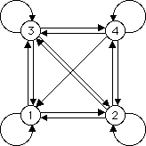

| For those Driven IFS determined completely by forbidden pairs, a compact representation of the IFS can be given by a graph showing the allowed pairs. |
| The graph has four vertices, one for each Ti, |
| and an edge from vertex i to vertex j if Ti can be be followed immediately by Tj. |
| For example, the Driven IFS with the single forbidden pair 41 has this graph: |
|  |
| Because T1 cannot be immediately followed by T4, the graph has no arrow from vertex 1 to vertex 4. |
| All other combinations are allowed, so all other pairs of edges are connected by arrows. |
Return to Driven IFS with Forbidden Combinations.